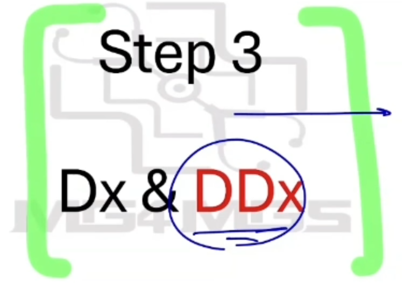

Approach to Headache - Explaining Diagnosis and Differential Diagnosis
Source: Dr. Amir workshop — Med workshop 2 - 2026 / CLASS 1 HEADACHE (Aug 2026 drop) · Specialty: neurology
The Three-Part Closing Structure
After the history, explain the diagnosis in a fixed order: (1) diagnosis, (2) address the patient's specific concern, (3) differential diagnosis. The role-player may ask clarifying questions if you are vague; done properly, each element earns its marks.
1. Diagnosis
- Name it simply: "James, I think you have a condition called migraine."
- Explain it simply: keep it short and lay-friendly, e.g. "Tension headache is a stress-related headache that causes tightening in the muscles of your neck."
- Give your reasons (key points): AMC now asks candidates to justify the most likely diagnosis, e.g. "I'm confident it's migraine because you have blurred vision and sparkly lights (aura), nausea, a family history, and wine makes it worse."
2. Address the Concern (Usually Brain Tumour)
Because so many headache cases carry an explicit fear of a brain tumour, explicitly explain why a tumour is unlikely, or the role-player will ask "Doctor, are you sure I don't have a tumour?" Cite 3–4 negative red flags: "You haven't lost weight, you have no weakness or numbness, and the pain doesn't wake you at night." If a physical examination was provided, add "your examination was also normal."
3. Differential Diagnosis
With roughly 60 seconds remaining, present a good, specific differential, briefly explaining the first few and then listing the rest. For each, give a one-line lay explanation and why it is unlikely:
- Tension headache — a stress-related headache; unlikely as you have no stress.
- Meningitis — an infection of the covering of your brain; unlikely as you have no fever.
- Sinusitis — infection in the cavities of your skull.
- Benign intracranial hypertension — raised pressure of the fluid in your brain.
- ICH/SAH — bleeding in your brain.
- Trigeminal neuralgia — pressure on a nerve; unlikely as it is not related to facial movement.
- Temporal arteritis (elderly) — inflammation of a blood vessel at the side of the head; unlikely as it is not tender and there is no pain on chewing or combing.
You may mention a condition as a differential even if it was not explicitly asked about in the history. Practise producing a strong list (avoid opening with trauma, medication overuse or shingles) so that the examiner can score it clearly if time runs short.
Case Figures




🔬 Expert Review & Enhancements
Reviewed by: history-taking-expert (Australian clinical supervisor) · fact-checked against the irStudy medical textbook RAG index.
✏️ Corrections
No factual corrections required.
⭐ Suggested Enhancements
🏷️ Metadata
📚 Reference Citations (RAG)
John Murtagh General Practice, 8th Edition.pdf p.554 (p1336) qdrant:2d4a590b-8679-4320-94b7-d5864172d086
John Murtagh General Practice, 8th Edition.pdf p.xiv (p29) qdrant:9f262528-f181-4d88-98eb-c1b710ea8487
John Murtagh General Practice, 8th Edition.pdf p.80 (p229) qdrant:c4c0c7c3-11ce-41ad-b015-a13ca14f48ba